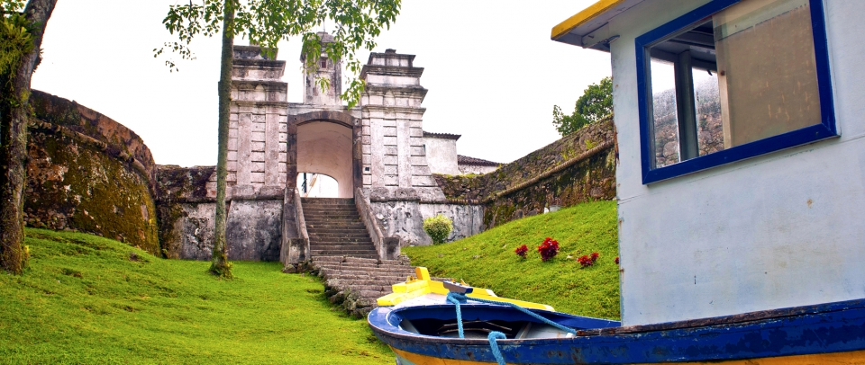
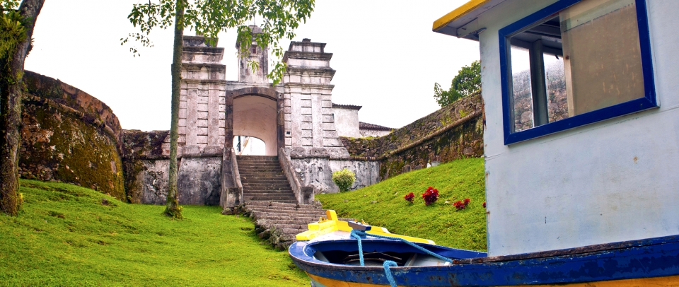

CAMINHO DOS PRÍNCIPES

Região colonizada principalmente por alemães, mas também por italianos, poloneses, franceses, suíços e noruegueses, o Caminho dos Príncipes conserva em sua arquitetura e hospitalidade os traços trazidos pelos imigrantes europeus. Diversidade ecológica, natureza rica e conservada, pólos industriais, ferrovia, tudo isso se encontra no Caminho dos Príncipes.
Joinville é não só a maior cidade da região, mas do estado. Conhecida como Cidade dos Príncipes e das Flores, é o maior pólo industrial e exportador catarinense. O Festival de Dança de Joinville foi reconhecido pelo Guinness Book em 2005 como o maior festival de dança do mundo. Capital brasileira da dança, Joinville é a única cidade do mundo a sediar uma filial do Teatro Ballet Bolshoi de Moscou fora da Rússia, a Escola do Teatro Bolshoi no Brasil.
Jaraguá do Sul, localizada no Vale do Itapocu, oferece ótimas condições para a prática de esportes de aventura, especialmente o vôo livre. O Parque Malwee, em uma área de 2,5 milhões de metros quadrados e 1,5 milhão de metros quadrados de área verde, possui matas ciliares e restinga preservadas e uma parte reflorestada com árvores exóticas.
Rio Negrinho é famosa pelo passeio no trem a vapor, que percorre 45 km de descida na Serra do Mar, passando por túneis, pontes e rios.
São Bento do Sul preserva com afinco as tradições dos colonizadores, homenageadas no mês de outubro com a Musikfest.
Principais municípios: Joinville, Jaraguá do Sul, Rio Negrinho, São Bento do Sul, Mafra e Canoinhas.
COSTA ESMERALDA

Este pequeno trecho do litoral é mais um pedacinho de paraíso em Santa Catarina. O tom verde do mar dá nome a esta região que tem mais de 30 belas praias de águas transparentes e ótimas para prática de mergulho. Por estar localizada próximo à Reserva Biológica Marinha do Arvoredo, a Costa Esmeralda é muito procurada por mergulhadores de todo o Brasil. A cultura açoriana está presente nos vilarejos de pescadores, na culinária baseada em frutos do mar, nos costumes e no folclore.
A maior atração de Porto Belo, além das diversas praias, é a Ilha de Porto Belo. Na Ilha foram encontradas inscrições rupestres dos primeiros homens que habitaram a região e é possível fazer trilhas orientadas na Mata Atlântica.
Itapema é o terceiro destino mais procurado por veranistas em Santa Catarina. A cidade conseguiu aliar natureza e infra-estrura oferecendo aos visitantes belas praias e costões sem se afastar do centro urbano. No verão Itapema recebe quase 200 mil turistas e oferece atrações aos mais variados gostos, como jet ski, banana boat, vela e outros esportes.
Em Bombinhas as maiores atrações são as mais de 20 praias, a água límpida, a natureza e a biodiversidade do local. As atividades mais praticadas são mergulho, snorkelling, surf, vela e esqui aquático.
Principais municípios: Itapema, Porto Belo e Bombinhas.
SERRA CATARINENSE

A Serra Catarinense, ou Planalto Serrano, é região mais fria do país, lugar onde neva a cada inverno, mesmo que em alguns poucos dias. O frio é tanto que até as cachoeiras congelam, árvores e outras plantas ficam cobertas de branco num espetáculo de beleza fascinante, que fica a apenas duas horas do litoral.
A maior cidade da região, Lages, era ponto de parada dos tropeiros que levavam gado do Rio Grande do Sul a São Paulo há mais ou menos duzentos anos, por isso características gaúchas são tão marcantes em toda a serra, como o hábito de tomar chimarrão e a mesa sempre farta com delícias coloniais. É em Lages também que acontece a maior festa do inverno, a Festa do Pinhão, que atrai milhares de turistas de outras cidades e estados. Nesta região foi criado o turismo rural. Quem se dirige à serra pode ficar alojado nos mais hospitaleiros hotéis-fazenda ou pousadas rurais. As maiores atrações destes lugares são os passeios a cavalo, de charrete, visitas a atrações naturais, ecoesporte e o turista ainda pode conhecer e participar da vida do campo em atividades como ordenha de vacas ou pescaria em açudes.
O caminho para quem chega ao planalto serrano também é fascinante. As maiores atrações são a Serra do Rio do Rastro, conhecida como o portal da Serra Catarinense. Do mirante, localizado no município de Bom Jardim da Serra, pode-se vislumbrar as curvas desta estrada que liga o planalto ao litoral catarinense. Em São Joaquim, a cidade da maçã, a maior atração é mesmo a neve. No início do ano acontece a colheita da maçã e pode-se provar o mel serrano. Urubici concentra alguns dos melhores pontos para a prática de turismo de aventura, como rapel, canoagem, cavalgadas e trilhas. Não se pode deixar de visitar na cidade o Morro da Boa Vista, com 1.827 metros de altitude e o Morro do Convento, com 1.822 metros, onde fica o cartão-postal de Urubici, a famosa Pedra Furada.
Principais municípios: Lages, São Joaquim, Urubici, Bom Jardim da Serra, Urupema e Bom Retiro.
ILHA DE SANTA CATARINA
 

Florianópolis é conhecida como a Ilha da Magia. Dizem que quem vem uma vez se apaixona e quer sempre voltar. Suas belezas naturais atraem milhares de turistas dos mais diversos lugares todos os anos. Capital de Santa Catarina, possui 436,4 km² de extensão, somadas as áreas insular e continental. É uma cidade de contrastes. Pequenos centros urbanos e completa infraestrutura dividem espaço tranqüilamente com as vilas de pescadores e outros povoados do interior da Ilha. Nessas comunidades, como o Ribeirão da Ilha e Santo Antônio de Lisboa, depara-se com todos os costumes açorianos nos conjuntos arquitetônicos, nos fortes, nas igrejas históricas, no artesanato, na mesa, onde o prato principal, é claro, sempre vem do mar, e até no jeito de falar daquele que é conhecido carinhosamente como manezinho da Ilha, o autêntico florianopolitano. Há sítios pré-históricos onde encontram-se inscrições rupestres muito antigas, localizados na Ilha do Campeche e no Costão do Santinho. Nas áreas urbanizadas estão os centros de eventos, hotéis, resorts, shoppings centers e teatros. A Ilha de Santa Catarina oferece atrativos para todos os gostos: praias lindas, lagoas doces e salgadas, ilhas, trilhas, ecoturismo, ecoesporte, passeios de escuna e muito mais.
Na região da Grande Florianópolis, nos municípios vizinhos de São José, Biguaçu, Palhoça e Santo Amaro da Imperatriz os atrativos também são grandes. Em Santo Amaro da Imperatriz as Caldas de Imperatriz, os rios para a prática de rafting e os morros para praticar vôo livre fazem da natureza o principal atrativo. Em Governador Celso Ramos ficam algumas das mais tradicionais vilas de pescadores, como Ganchos, região em que a cultura açoriana é fortemente preservada. Palhoça tem algumas das mais belas praias do litoral sul, como a Guarda do Embaú, Praia da Pinheira, Praia do Sonho e Enseada do Brito.
Principais municípios: Florianópolis, Palhoça, São José, Santo Amaro da Imperatriz e Governador Celso Ramos.